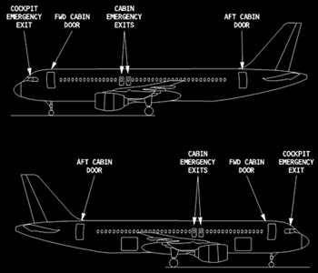

Emergency Exits and Slides
Cabin and Cockpit Exits
CABIN EXITS - The four passenger cabin entry/service doors serve as emergency exits and are paired along the airplane cabin. The doors are identified as 1 (forward) and 2 (aft) left and right. All entry/service doors may be opened or closed manually from inside or outside of the airplane.
COCKPIT EXITS - The cockpit door and windows can be used for emergency exit. Ropes are located in the overhead cockpit area that allowed for an emergency exit via the cockpit windows.
|  |